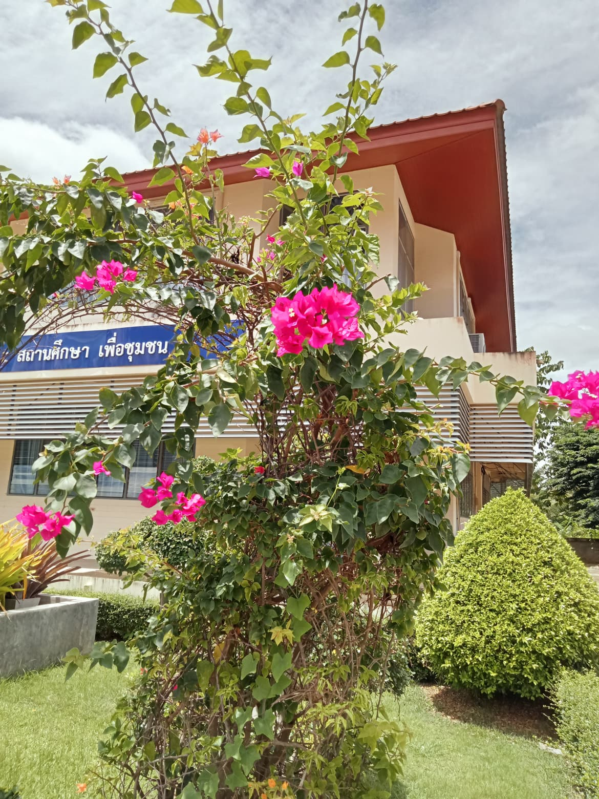

ต้นเฟื่องฟ้า
ต้นเฟื่องฟ้า
ประวัติความเป็นมา
เฟื่องฟ้าถูกค้นพบครั้งแรกในประเทศบราซิลโดยนักพฤกษศาสตร์ชาวฝรั่งเศสราวปี คศ.1766-1769 และได้ถูกนำไปปลูกยังส่วนต่างๆ ของโลก เริ่มจากยุโรป อเมริกาเหนือและเอเซีย สำหรับในประเทศไทยมีการนำพันธุ์เฟื่องฟ้าเข้ามาจากสิงคโปร์ครั้งแรกราวปี พศ.2423 ในสมัยรัชการที่ 5 และมีการนำเข้าจากต่างประเทศมากมายจนถึงปัจจุบัน พันธุ์เฟื่องฟ้าในประเทศไทยมีไม่น้อยกว่าต่างประเทศเนื่องจากเฟื่องฟ้าเจริญเติบโตได้ดีในประเทศไทยแล้วยังเกิดการกลายพันธุ์เกิดเป็นพันธุ์ใหม่ขึ้นมากมาย
รายละเอียดพื้นพันธ์
เป็นไม้ยืนต้นประเภทพุ่มกึ่งเลื้อยอายุยืนหลายสิบปี ขนาดตั้งแต่พุ่มเล็กถึงพุ่มใหญ่ มีหนามขึ้นตามลำต้นอยู่เหนือใบ ใบเป็นใบเดี่ยวแตกออกสลับกับกิ่งหรือเยื้องกัน มีขนขึ้นปกคลุมเล็กน้อย มีสีเขียวหรือใบด่าง รูปร่างรีแหลมยาว 3-6 ซม. กว้าง 2.5 ซม.
ใบประดับลักษณะคล้ายรูปหัวใจหรือรูปไข่มี 3-5 ใบ มีหลายสี เช่น ม่วง แดง ชมพู ส้ม ฟ้า เหลืองและอื่นๆ ผู้พบเห็นทั่วไปมักเข้าใจว่าใบประดับคือดอก ดอกมีทั้งดอกสมบูรณ์เพศและไม่สมบูรณ์เพศ ออกเป็นช่อตามซอกใบหรือปลายกิ่ง แต่ละช่อมี 3 ดอก เป็นหลอดยาว 1-2 ซม. ติดอยู่ที่เส้นกลางใบของใบประดับ
ส่วนใหญ่มักเข้าใจว่าดอกคือเกสรดอก ดอกเป็นชนิดไม่มีกลีบดอก มีกลีบเลี้ยง 5 กลีบ มีเกสรตัวผู้ 5-10 อัน การปลูกเลี้ยงในประเทศไทยมักจะเกิดการกลายพันธุ์ โดยเนื้อเยื่อบริเวณตามีการเปลี่ยนแปลงในระดับเซลทำให้ส่วนต่างๆ เปลี่ยนไป เช่น สีของใบประดับเปลี่ยนไป กลายพันธุ์เป็นใบประดับซ้อน กลายพันธุ์เป็นใบด่าง กลายพันธุ์เป็นดอกกระจุก